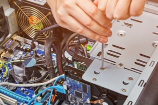

Brindo servicios de soporte y consultoria informática orientada a pequeñas y medianas empresas.
Pensando en un público de pequeños comercios, profesionales independientes y
clientes particulares, te conviene ofrecer servicios claros y fáciles de entender,
evitando términos demasiado técnicos.
Reparación y diagnóstico de computadoras de escritorio y notebooks.
Mantenimiento preventivo y limpieza de equipos.
Detección y solución de problemas de funcionamiento y rendimiento.
Instalación, configuración y actualización de sistemas operativos.
Instalación y configuración de programas y aplicaciones.
Eliminación de software malicioso, virus y programas no deseados.
Optimización de equipos lentos o con bajo rendimiento.
Configuración de impresoras, dispositivos y periféricos.
Configuración de redes domésticas y conexiones Wi-Fi.
Recuperación de información ante fallas de software o del sistema.
Configuración de copias de seguridad y respaldo de archivos importantes.
Asesoramiento para ampliación, actualización o renovación de componentes.
Instalación y actualización de componentes de hardware.
Configuración y puesta a punto de equipos nuevos.
Asistencia para resolver problemas habituales de Windows y aplicaciones.
Asistencia técnica remota y presencial según las necesidades del cliente.
Servicios para el hogar

Reparación y Soporte Técnico para PC Hogareñas
Brindo servicios de reparación, mantenimiento y soporte técnico informático para computadoras de
escritorio y notebooks de uso hogareño, ayudando a resolver problemas de funcionamiento,
rendimiento, software y conectividad.
Los servicios están orientados a usuarios particulares que necesitan una solución clara y confiable,
tanto para reparar un equipo con problemas como para mantenerlo en buenas condiciones.
Reparación y diagnóstico de computadoras de escritorio y notebooks.
Mantenimiento preventivo y limpieza de equipos.
Detección y solución de problemas de funcionamiento y rendimiento.
Instalación, configuración y actualización de sistemas operativos.
Instalación y configuración de programas y aplicaciones.
Eliminación de software malicioso, virus y programas no deseados.
Optimización de equipos lentos o con bajo rendimiento.
Configuración de impresoras, dispositivos y periféricos.
Configuración de redes domésticas y conexiones Wi-Fi.
Recuperación de información ante fallas de software o del sistema.
Configuración de copias de seguridad y respaldo de archivos importantes.
Asesoramiento para ampliación, actualización o renovación de componentes.
Instalación y actualización de componentes de hardware.
Configuración y puesta a punto de equipos nuevos.
Asistencia para resolver problemas habituales de Windows y aplicaciones.
Asistencia técnica remota y presencial según las necesidades del cliente.
El objetivo es ofrecer una solución práctica y comprensible, explicando al cliente cuál es el
problema, qué alternativas existen y qué intervención resulta conveniente en cada caso.
Cómo me gusta preparar el mate
Te cuento que como servicio a la comunidad cómo me gusta preparar el mate, si bien
no soy Entrerriano, mucho menos Uruguayo, y no lo digo por despecho sino sólo
por la geografía en la que nací; claramente tampoco soy un experto en el tema,
pero tengo mi técnica.
Bueno ahora no tanto biribili y más acción!!
Cargá el mate con yerba entre la mitad y las tres cuartas partes de su
capacidad. No hace falta que la midas con regla... a ojo, ¿se entiende?
Tapá la boca del mate con la mano, ponelo boca abajo y dale unas buenas
sacudidas. No hace falta que te explique que la mano va en la boca del mate... confío en
vos,
¡¡elijo creer!!
Formá la montañita llevando la yerba hacia un costado y humedecé la parte
baja
con un chorrito de agua tibia o fría. Ojo: sin llenar el mate y, sobre todo, sin
romper
la montañita.
Apoyá el mate inclinado, aproximadamente a 70° respecto de la horizontal.
No te preocpes grados más grados menos de inclinación no cambian el sabor... bombilla en la
mesa
y
un lateral del mate apollado sobre el cuello de ella es lo que necesitamos, y con que no se
desarme
la montañita (ni se te caiga el mate) estamos más que bien.
Dejalo descansar entre 3 y 5 minutos. Siiii... tranqui.
Las cosas buenas llevan su tiempo.
Colocá la bombilla en la parte húmeda, bien pegada a la pared del mate.
Y desde este momento hay una sola regla:
¡no la muevas más!
Ahora sí, cebá el primer mate. Verté el agua caliente siempre del lado de la
bombilla, hasta que el nivel llegue al borde de la montañita.
Pero paráaaa!!!! ¡que no se pase!
Esperá un minuto más para que la yerba termine de hidratarse y...
ahora sí viene lo mejor (o lo peor, eso lo dejo a tu criterio):
cebar, cebar y cebar.
Bonus: El agua debería estar entre 70 y 80°C.
Si está hirviendo, esperá un poquito.
La yerba también tiene sentimientos!! No la queméeeeeees!! 😄